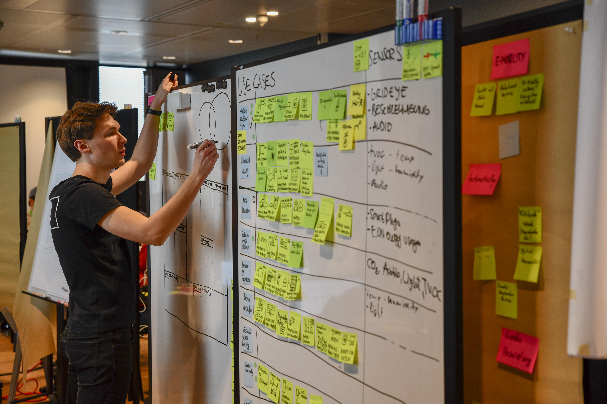

Process
While the other teams started implementing an idea right away, we focused on ideation and invested our time into finding the right idea for E.ON and its customers.
💡 Discover quick ideas
We started by examining the capabilities of the various sensors and brainstorming how customers might benefit from them. Then we collected as many quick ideas as possible using sticky notes and ideation methods to keep the momentum going.
🔍 Explore use cases
Next, we clustered related ideas and created use cases from them. Then we discussed the desirability, viability and feasibility of the use cases together with business and technical stakeholders from E.ON, before selecting the best use cases for further development.
🚀 Check business models
We used the Business Model Canvas to assess the selected use cases and create comprehensive product concepts from them. Before deciding which product to pitch, we got together with a business stakeholder one last time to validate that we will present the best solution for E.ON and its customers.
